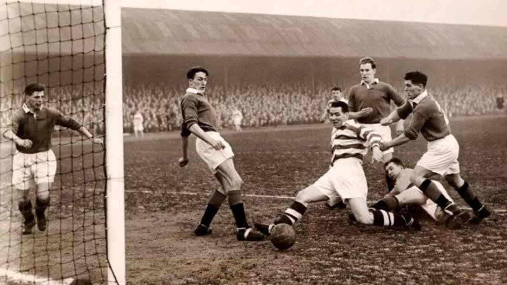
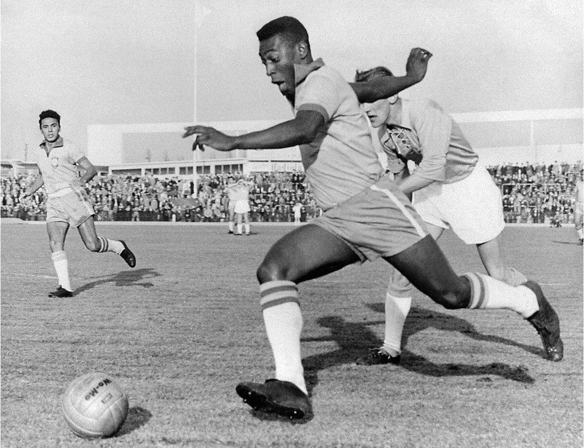
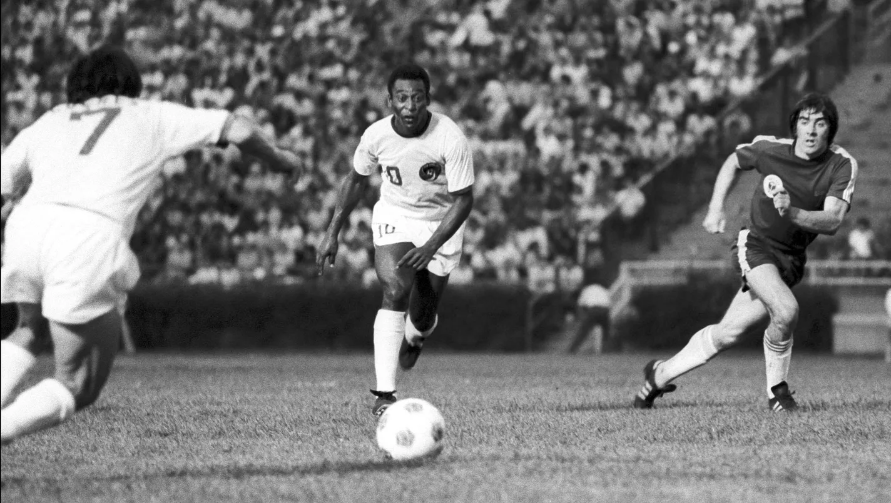

The history of football since 1800 is a story of transition, moving from disorganized folk games to a globally standardized, professional sport. The first major phase occurred in mid-19th century England, driven by the desire to codify the disparate rules used in public schools. This culminated in the crucial meetings of 1863 and the formation of The Football Association (FA), which established the defining characteristic of "Association Football" by formally banning the use of hands and the violent practice of "hacking." This set of laws created a distinct, non-handling sport, separating it entirely from Rugby Football. The establishment of the FA Cup in 1871 and the legalization of professionalism in 1885 quickly transitioned the game from a hobby into a competitive, spectator-driven industry, enabling its rapid growth among the working class.
As the game matured in Britain, it rapidly spread across the globe, especially to South America and continental Europe, carried by trade and immigration. This necessitated a global governing structure, leading to the formation of the Fédération Internationale de Football Association (FIFA) in 1904. This international body eventually sanctioned the creation of the ultimate global competition: the FIFA World Cup, first held in 1930 in Uruguay. The post-World War II era saw the consolidation of continental club competitions, such as the European Cup (now the Champions League), cementing football's place as the world's most popular spectator sport and establishing the modern framework of major national leagues and global tournaments.
The final phase of football's history is characterized by tactical innovation and massive commercialization. Key rule changes, like the relaxing of the Offside Rule in 1925 and the introduction of the Back-Pass Rule in 1992, continually sped up the game and fostered more attacking play. The late 20th and early 21st centuries saw the game become a multi-billion dollar global entertainment industry, exemplified by the rise of super-leagues like the English Premier League and the integration of technology like the Video Assistant Referee (VAR). From chaotic village contests to a highly refined, technologically supported spectacle, the period since 1800 marks the complete evolution of football into the global phenomenon it is today.


